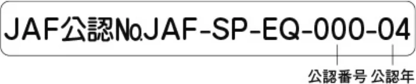
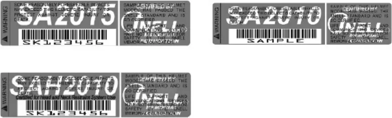
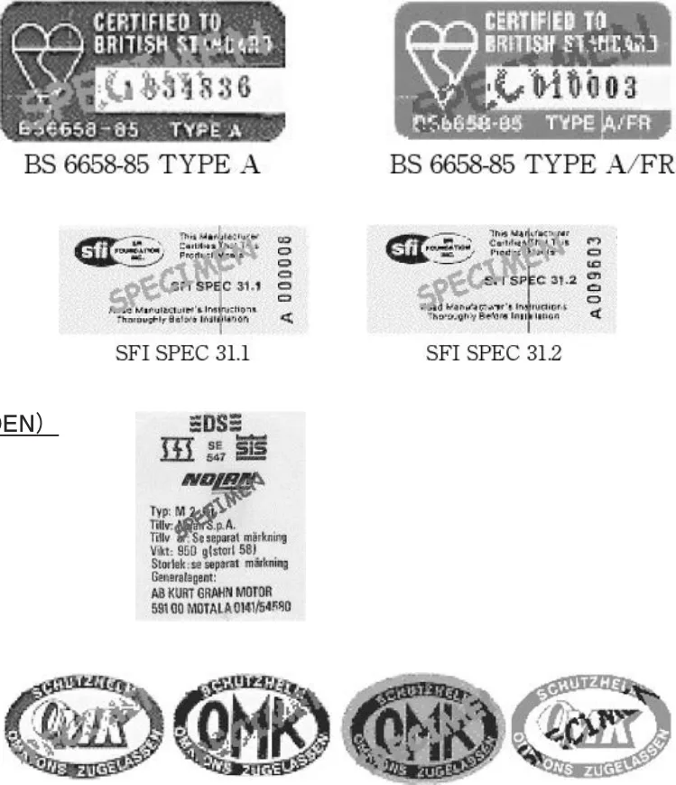
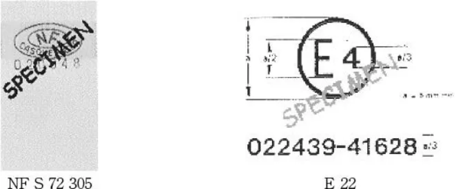
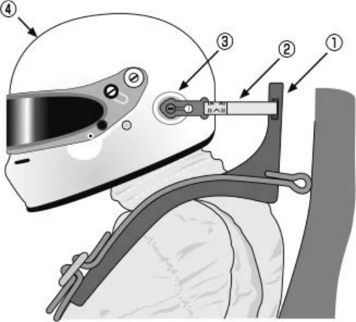

スピード競技用ヘルメットに関する指導要綱_2027
P.1スピード競技用ヘルメットに関する指導要綱
スピード競技では、ＪＡＦ公認競技用ヘルメット、国際モータースポーツ競技規則付則Ｊ項のテクニカルリストに記載された基準、または、下記2．の規格に適合する競技用ヘルメットを競技中常に装着すること。
１．ＪＡＦ公認競技用ヘルメット
ａ．ＪＡＦ公認競技用ヘルメットのリストは、「レース競技に参加するドライバーの装備品に関する細則」を参照のこと。
ｂ．ＪＡＦ公認競技用ヘルメットには、下記の公認シールが貼付されている。
ＪＡＦ公認品の証明であるので、取り外さないこと。
ＪＡＦ公認シール
見本：

２．各規格
１）日本産業規格（JIS）乗車用安全帽（JIS T8133：2015 ２種）の基準に合致したヘルメット（旧規格JIS T8133:1997のＣ種、JIS T8133：2000およびJIS T8133：2007適合品を含む）
帽体の形状がハーフ形、スリークォーターズ形のもの、および２輪用特殊ヘルメットは使用できない。
ῲ２輪用特殊ヘルメット ・トライアル用΅ ｜ ・オフロード用｜ ῴ ・モトクロス用
２）ＳＮＥＬＬ規格
３）British Standards Institution BS6658-85 types A and A/FR including all amendments（Great Britain）
４）SFI Foundation Inc., SFI spec 31.1 and SFI spec 31.2（USA）
５）SIS 88.24.11（2）（Sweden）
６）DS 2124.1（Denmark）
７）SFS 3653（Finland）
８）ONS/OMK（Germany）（black on white, black on blue, blue on white or red on white labels only）
９）NF S 72 305（France）
10）E22（Commission of the European Economic Communities）with the 02, 03 , 04 or 05 series
11）ECE規格
上記基準に合致したヘルメットには、下記のラベルが貼付されている。
基準合致の証明であるので取り外さないこと。
SNELL FOUNDATION（USA）

M2020D, M2020R, M2015, M2010, K2015, K2010, 他
（SA90, SA95, SA2000, SA2005, M95, M2000, M2005, K98等：以前の規格のため、一部モデルは製造中止／認証が取り消されている場合があります。）
P.2B.S.I.（GREAT BRITAIN）

SFI（USA）
SIS 88.24.11（2）（SWEDEN）
DS 2124.1（DENMARK）
SFS 3653（FINLAND）
ONS/OMK/GERMANY
AFNOR （FRANCE） C.E.E./E.E.C. （EUROPE）

３．車両形式、競技形式などによるヘルメット種別の適用
１）オープンカー
フルフェイス型ヘルメットを着用すること。（但し、競技会特別規則で特別の定めがある場合を除く。）
なお、以下の二輪用特殊ヘルメットは使用禁止とする。
・トライアル用
・オフロード用
・モトクロス用
・フリップアップ式
2）クローズドカー
フルフェイス型ヘルメットの着用を推奨する。（但し、競技会特別規則で特別の定めがある場合を除く。）
なお、以下の二輪用特殊ヘルメットは使用禁止とする。
・トライアル用
・オフロード用
・モトクロス用
・フリップアップ式
４．改造、加工の禁止
ヘルメット製造者が認めた方法および当該ヘルメット型番に認証を与えた基準機構が認めた方法を除き、ヘルメット
P.3に対し一切の改造、加工をしてはならない。
５．保護能力
１）塗料はヘルメットの帽体の素材と反応し、その保護能力に影響を与える可能性がある。ヘルメット製造者が定めたヘルメットの装飾、塗装に関する制限事項、あるいは指導要綱に従うこと。
２）ヘルメットに強い衝撃を受けた場合、外観に異常がなくても保護能力が劣化している場合もある。ヘルメット製造者、あるいはヘルメット製造者が指定した工場、代理店などに専門的判断を委ねること。
６．使用限度
製造後「１０年」を経過したものを使用してはならない。
７．頭部および頸部の保護装置（ＦＨＲシステム）
１）ＪＡＦあるいはＦＩＡによって認められない限り、頭部や頸部の保護を意図してヘルメットに装着するいかなる装置の着用も禁止される。
２）国際格式の競技においては、国際モータースポーツ競技規則付則Ｌ項に従い、ＦＩＡ基準8858に従い公認されたＦ ＨＲシステムの着用が義務付けられる。
３）国内格式以下の競技において、頭部および頸部の保護装置を使用する場合は、以下に従うこと。
（１）ＦＩＡ基準8858に従い公認されたＦＨＲシステムを使用すること。
（２）ＦＨＲシステムは、ＦＩＡテクニカルリストNo.33、No.41、No.49もしくはNo.69に列記されている当該装置に適合するヘルメットと共に着用しなければならない。
（３）テザー取り付け点がヘルメット製造者により当初から装着されているヘルメットの使用が推奨される。また、公認されたテザーを使用すること。
（４）ＪＡＦあるいはＦＩＡによって認められた装置をヘルメットに装着する場合には、ヘルメット製造者および頭部／頸部保護装置製造者が指定した工場、代理店などに委ねること。
国内格式以下の競技における頭部および頸部の保護装置を使用する場合の条件

| ① | 頭部の動きを抑制する装置 | FIA基準8858に合致したＦＨＲシステムを使用すること。 |
| ② | テザー | FIA基準8858に合致したテザーを使用すること。 |
| ③ | テザー取付点 | ヘルメットメーカーが認証したテザー取付点を使用すること。 |
| ④ | ヘルメット | ＦＨＲシステムに適合するものでなくてはならない。 |